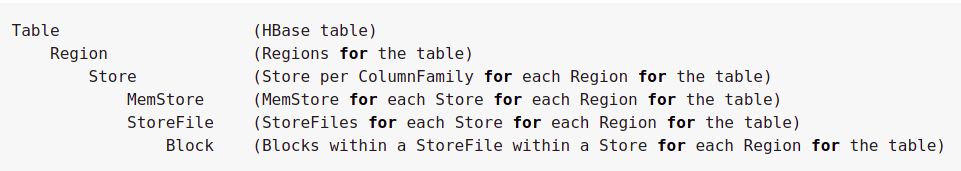
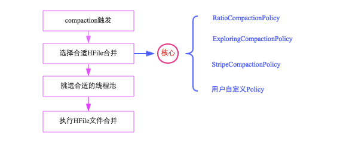
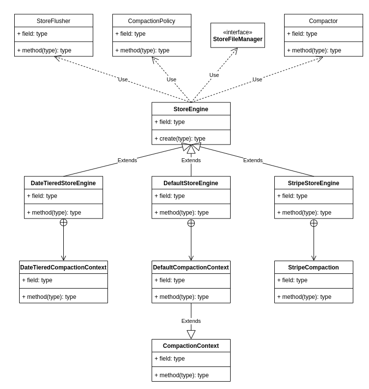
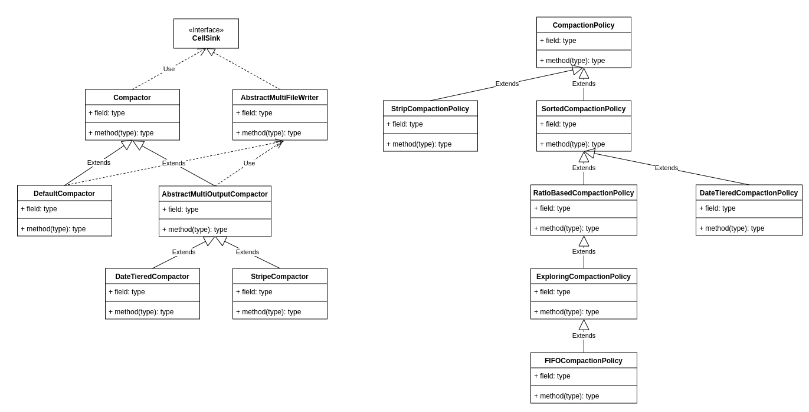
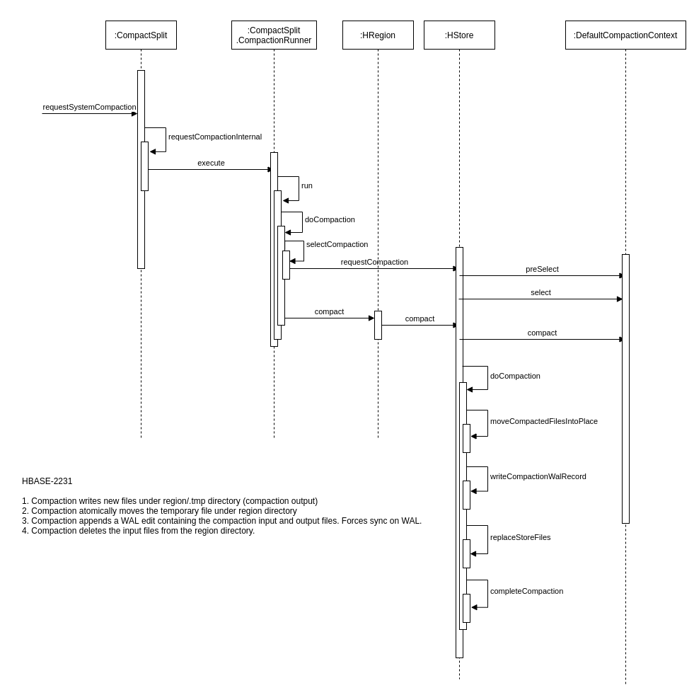

Ch11-HBase 之 Region Compaction
March 21, 2021
HBase Region Compaction
1. Compaction 涉及到的模块说明 #
1.1 Compaction 种类 #

Compaction 会从一个 region 的一个 store 中选择一些 hfile 文件进行合并。合并说来原理很简单，先从这些待合并的数据文件中读出 KeyValues，再按照由小到大排列后写入一个新的文件中。之后，这个新生成的文件就会取代之前待合并的所有文件对外提供服务。HBase 根据合并规模将 Compaction 分为了两类：MinorCompaction 和 MajorCompaction。
1.2 Minor Compaction #
选取一些小的、相邻的 StoreFile 将他们合并成一个更大的 StoreFile，在这个过程中不会处理已经 Deleted 或 Expired 的 Cell。一次 Minor Compaction 的结果是更少并且更大的 StoreFile。
1.3 Major Compaction #
将所有的 StoreFile 合并成一个 StoreFile，这个过程还会清理三类无意义数据：被删除的数据、TTL 过期数据、版本号超过设定版本号的数据。另外，一般情况下，Major Compaction 时间会持续比较长，整个过程会消耗大量系统资源，对上层业务有比较大的影响。因此线上业务都会将关闭自动触发 Major Compaction 功能，改为手动在业务低峰期触发。
2. Compaction 的流程介绍 #

Compaction 的整个流程中涉及到了非常重要的几个组件，StoreEngine，CompactionContext，CompactionPolicy，Compactor。


CompactionContext 决定了 StoreFile 的选取策略 (CompactionPolicy)，也决定了 StoreFile 的合并策略 (Compactor)。而 CompactionContext 最终由 StoreEngine 初始化（读取配置，通过反射的方式创建对应的类）。
hbase.hstore.defaultengine.storeflusher.class=DefaultStoreFlusher.class
hbase.hstore.engine.class=DefaultStoreEngine.class
hbase.hstore.defaultengine.compactor.class=DefaultCompactor.class
hbase.hstore.defaultengine.compactionpolicy.class=ExploringCompactionPolicy.class

CompactionContext 是个抽象类，有三个非常重要的方法preSelect，select，compact。
preSelect 方法在 coprocessor 的 preCompactSelection 方法之间调用，主要是为 coprocessor 过滤一些 storefile（比如排除掉那些明显本次就不会被 compac 的文件）。 select 方法由 compaction 选择文件时调用，一般会依赖具体的算法实现，最后与 compact 方法配合使用。
2.1 Compaction 触发时机 #
HBase 中可以触发 compaction 的因素有很多，最常见的因素有这么三种：MemStore Flush、后台线程周期性检查、手动触发。
2.2 MemStore Flush #
应该说 compaction 操作的源头就来自 flush 操作，memstore flush 会产生 HFile 文件，文件越来越多就需要 compact。因此在每次执行完 Flush 操作之后，都会对当前 Store 中的文件数进行判断，一旦文件数大于等于 hbase.hstore.compactionThreshold，就会触发 compaction。需要说明的是，compaction 都是以 Store 为单位进行的，而在 Flush 触发条件下，整个 Region 的所有 Store 都会执行 compact，所以会在短时间内执行多次 compaction。
2.3 后台线程周期性检查 #
后台线程 CompactionChecker 定期触发检查是否需要执行 compaction，检查周期为：hbase.server.thread.wakefrequency * hbase.server.compactchecker.interval.multiplier。和 flush 不同的是，该线程优先检查文件数是否大于 hbase.hstore.compactionThreshold，一旦大于就会触发 compaction。如果不满足，它会接着检查是否满足 major compaction 条件，简单来说，如果当前 store 中 hfile 的最早更新时间早于某个值 mcTime，就会触发 major compaction，HBase 预想通过这种机制定期删除过期数据。
2.4 手动触发 #
一般来讲，手动触发 compaction 通常是为了执行 major compaction，原因有三
- 其一是因为很多业务担心自动 major compaction 影响读写性能，因此会选择低峰期手动触发；
- 其二也有可能是用户在执行完 alter 操作之后希望立刻生效，执行手动触发 major compaction；
- 其三是 HBase 管理员发现硬盘容量不够的情况下手动触发 major compaction 删除大量过期数据；
无论哪种触发动机，一旦手动触发，HBase 会不做很多自动化检查，直接执行合并。
3. 选择合适 HFile 合并 #
3.1 RatioCompactionPolicy #
从老到新逐一扫描所有候选文件，满足其中条件之一便停止扫描：
当前文件大小 < 比它更新的所有文件大小总和 * ratio，其中 ratio 是一个可变的比例，在高峰期时 ratio 为 1.2，非高峰期为 5，也就是非高峰期允许 compact 更大的文件。那什么时候是高峰期，什么时候是非高峰期呢？用户可以配置参数 hbase.offpeak.start.hour 和 hbase.offpeak.end.hour 来设置高峰期当前所剩候选文件数 <= hbase.store.compaction.min（默认为3），停止扫描后，待合并文件就选择出来了，即为当前扫描文件 + 比它更新的所有文件
3.2 ExploringCompactionPolicy #
该策略思路基本和 RatioBasedCompactionPolicy 相同，不同的是，Ratio 策略在找到一个合适的文件集合之后就停止扫描了，而 Exploring 策略会记录下所有合适的文件集合，并在这些文件集合中寻找最优解。最优解可以理解为：待合并文件数最多或者待合并文件数相同的情况下文件大小较小，这样有利于减少 compaction 带来的 IO 消耗。
3.3 StripCompactionPolicy #
3.4 用户自定义 Policy #
4. 挑选合适的执行线程池 #
HBase 实现中有一个专门的线程 CompactSplitThead 负责接收 compact 请求以及 split 请求，而且为了能够独立处理这些请求，这个线程内部构造了多个线程池：largeCompactions、smallCompactions以及 splits 等，其中 splits 线程池负责处理所有的 split 请求，largeCompactions 和 smallCompaction 负责处理所有的 compaction 请求，其中前者用来处理大规模 compaction，后者处理小规模 compaction。
注意
- 待 compact 的文件总大小如果大于值 throttlePoint（可以通过参数 hbase.regionserver.thread.compaction.throttle 配置，默认为 2.5G），分配给 largeCompactions 处理，否则分配给 smallCompactions 处理。所以并不是 largeCompactions 就处理 Major Compaction，而 smallCompactions 就去处理 Minor Compaction。
- largeCompactions 线程池和 smallCompactions 线程池默认都只有一个线程，用户可以通过参数 hbase.regionserver.thread.compaction.large 和 hbase.regionserver.thread.compaction.small 进行配置
5. HFile 文件合并 #
上文一方面选出了待合并的 HFile 集合，一方面也选出来了合适的处理线程，万事俱备，只欠最后真正的合并。合并流程说起来也简单HBASE-2231，主要分为如下几步：
- 分别读出待合并 hfile 文件的 KV，并顺序写到位于
regionName/tmp目录下的临时文件中 - 将临时文件移动到对应 region 的数据目录
- 将 compaction 的输入文件路径和输出文件路径封装为 KV 写入 WAL 日志，并打上 compaction 标记，最后强制执行 sync
- 将对应 region 数据目录下的 compaction 输入文件全部删除
注意
上述四个步骤看起来简单，但实际是很严谨的，具有很强的容错性和完美的幂等性：
- 如果 RS 在步骤 2 之前发生异常，本次 compaction 会被认为失败，如果继续进行同样的 compaction，上次异常对接下来的 compaction 不会有任何影响，也不会对读写有任何影响。唯一的影响就是多了一份多余的数据。
- 如果 RS 在步骤 2 之后、步骤 3 之前发生异常，同样的，仅仅会多一份冗余数据。
- 如果在步骤 3 之后、步骤 4 之前发生异常，RS 在重新打开 region 之后首先会从 WAL 中看到标有 compaction 的日志，因为此时输入文件和输出文件已经持久化到 HDFS，因此只需要根据 WAL 移除掉 compaction 输入文件即可